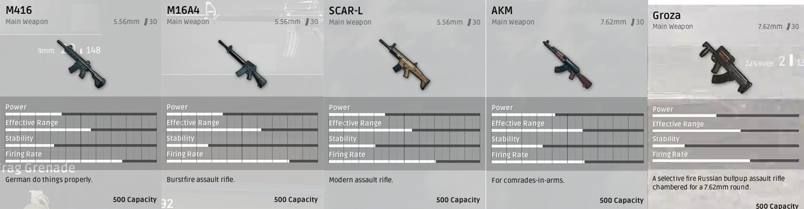

- Assault Rifles 
- Sniper Rifles
- Submachine Guns
- Shotguns
- Pistols
- Miscellaneous
M416- The M416 is a medium power assault rifle that can be shot at single or full auto, good for medium range.
M16A4- The M16a4 is a medium power assault rifle that can be shot in single or 3-round burst fire, good at medium and long range.
SCAR-L- The SCAR-L is a medium power assault rifle that is shot in both single and full auto modes, good at close to medium range.
AKM- The AKM is a high power assault rifle shot in both single and full auto modes, great at long to medium range.
GROZA- The GROZA is a high power assault rifle that is shot in both single and full auto modes, good at medium to close range.

SKS- The SKS is a semi-automatic sniper rifle, it has high power and is good at long range.
Kar-98- The Kar-98 is a bolt action sniper rifle, it has high power and is great at long range.
M24- The M24 is a bolt action sniper rifle, it has high power and is great at long range.
MK14- The MK14 is a semi-automatic sniper rifle, it has high power and is good at long range.
VSS- The VSS is a semi-automatic sniper rifle, it is low power and good at medium range.
AWM- The AWM is a bolt action sniper rifle, it has extremely high power and is great at long range.

Micro UZI- The Micro UZI is a fast rate of fire submachine gun, made for close range. Can be shot in single or full auto mode.
UMP9- The UMP9 is a medium rate of fire submachine gun, made for close to medium range. Can be shot in single, burst, and full auto mode.
Vector- The Vector is a fast rate of fire submachine gun, made for close range. It can be shot in single and full auto mode.
Tommy Gun- The Tommy Gun is a fast rate of fire submachine gun, good for close to medium range. Can be shot in both single and full auto.

S682- The S682 is a double barrel shotgun that is good at close range, it can only be shot in single fire mode.
S1897- The S1897 is a pump action shotgun that is good at close range, it can only be shot in single fire mode.
S12K- The S12K is a clip shotgun that is good at close range, it can only be shot in full auto mode.

R1895- The R1895 is a high power pistol, shot in only single fire mode. Good at close range.
P92- The P92 is a medium power pistol, shot in only single fire mode. Good at close range.
P1911- The P1911 is a low power pistol, shot in only single fire mode. Good at close range.
P18C- The P18C is a medium power pistol, shot in both single and full auto mode. Good at close range.

Crossbow- The Crossbow is a single shot weapon that must be reloaded after every arrow is shot. It is not too good at any range. But makes no noise.
M249- The M249 is good a close to medium range. It has a high magazine capacity and can be shot in both single and full auto mode.